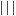
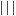

Svarog offers control of  multichannel EEG display, including:
antialiasing,  lines,
multichannel EEG display, including:
antialiasing,  lines,
 zoom,
[
zoom,
[ ] spectrum of selected epoch,
custom montages and
frequency domain filters, turning the filters on
and off
] spectrum of selected epoch,
custom montages and
frequency domain filters, turning the filters on
and off
 ,
tagging signal structures
,
defining custom tags
,
tagging signal structures
,
defining custom tags  ,
as well as classical and advanced signal processing methods:
averaging evoked potentials(EP), spectrogram (STFT) and wavelet transform
(WT) estimation, matching pursuit, Directed Transfer Funtions (DTF) and Independent Component Analysis (ICA). Finally, depending on the presence of proper drivers and hardware,
also recording
,
as well as classical and advanced signal processing methods:
averaging evoked potentials(EP), spectrogram (STFT) and wavelet transform
(WT) estimation, matching pursuit, Directed Transfer Funtions (DTF) and Independent Component Analysis (ICA). Finally, depending on the presence of proper drivers and hardware,
also recording 
 of EEG and video
.
of EEG and video
.
Functions from menus include::